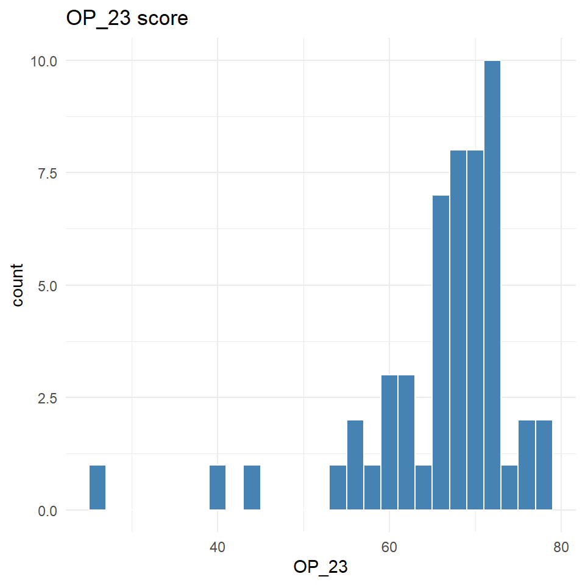

---- Compiling #TidyTuesday Information for 2025-04-08 ----
--- There is 1 file available ---
── Downloading files ───────────────────────────────────────────────────────────
1 of 1: "care_state.csv"
care_state <- tuesdata$care_state
Emergency room wait times vary significantly across the United States depending on factors such as hospital resources, patient volume, and staffing levels, with some states facing delays that can stretch for more than three hours.
Is there a connection between state populations and wait times? Which conditions have the longest wait times? The shortest?
Initial EDA
summary(care_state)
state condition measure_id measure_name
Length:1232 Length:1232 Length:1232 Length:1232
Class :character Class :character Class :character Class :character
Mode :character Mode :character Mode :character Mode :character
score footnote start_date end_date
Min. : 1 Length:1232 Min. :2023-01-01 Min. :2023-12-31
1st Qu.: 70 Class :character 1st Qu.:2023-04-01 1st Qu.:2024-03-31
Median : 93 Mode :character Median :2023-04-01 Median :2024-03-31
Mean :134 Mean :2023-04-05 Mean :2024-03-14
3rd Qu.:193 3rd Qu.:2023-04-01 3rd Qu.:2024-03-31
Max. :730 Max. :2024-01-01 Max. :2024-03-31
NA's :155
str(care_state)
spc_tbl_ [1,232 × 8] (S3: spec_tbl_df/tbl_df/tbl/data.frame)
$ state : chr [1:1232] "AK" "AK" "AK" "AK" ...
$ condition : chr [1:1232] "Healthcare Personnel Vaccination" "Healthcare Personnel Vaccination" "Emergency Department" "Emergency Department" ...
$ measure_id : chr [1:1232] "HCP_COVID_19" "IMM_3" "OP_18b" "OP_18b_HIGH_MIN" ...
$ measure_name: chr [1:1232] "Percentage of healthcare personnel who are up to date with COVID-19 vaccinations" "Healthcare workers given influenza vaccination Higher percentages are better" "Average (median) time patients spent in the emergency department before leaving from the visit A lower number o"| __truncated__ "Average time patients spent in the emergency department before being sent home A lower number of minutes is better (high)" ...
$ score : num [1:1232] 7.3 80 140 157 136 136 NA 196 230 182 ...
$ footnote : chr [1:1232] NA NA "25, 26" "25, 26" ...
$ start_date : Date[1:1232], format: "2024-01-01" "2023-10-01" ...
$ end_date : Date[1:1232], format: "2024-03-31" "2024-03-31" ...
- attr(*, "spec")=
.. cols(
.. state = col_character(),
.. condition = col_character(),
.. measure_id = col_character(),
.. measure_name = col_character(),
.. score = col_double(),
.. footnote = col_character(),
.. start_date = col_date(format = ""),
.. end_date = col_date(format = "")
.. )
- attr(*, "problems")=<externalptr>
[1] "Percentage of healthcare personnel who are up to date with COVID-19 vaccinations"
[2] "Healthcare workers given influenza vaccination Higher percentages are better"
[3] "Average (median) time patients spent in the emergency department before leaving from the visit A lower number of minutes is better"
[4] "Average time patients spent in the emergency department before being sent home A lower number of minutes is better (high)"
[5] "Average time patients spent in the emergency department before being sent home A lower number of minutes is better (low)"
[6] "Average time patients spent in the emergency department before being sent home A lower number of minutes is better (moderate)"
[7] "Average (median) time patients spent in the emergency department before leaving from the visit- Psychiatric/Mental Health Patients. A lower number of minutes is better"
[8] "Average time patients spent in the emergency department before leaving from the visit - Psychiatric/Mental Health Patients. A lower number of minutes is better (high)"
[9] "Average time patients spent in the emergency department before leaving from the visit - Psychiatric/Mental Health Patients. A lower number of minutes is better (low)"
[10] "Average time patients spent in the emergency department before leaving from the visit - Psychiatric/Mental Health Patients. A lower number of minutes is better (moderate)"
[11] "Average time patients spent in the emergency department before leaving from the visit - Psychiatric/Mental Health Patients. A lower number of minutes is better (very high)"
[12] "Percentage of patients who left the emergency department before being seen Lower percentages are better"
[13] "Percentage of patients who came to the emergency department with stroke symptoms who received brain scan results within 45 minutes of arrival Higher percentages are better"
[14] "Percentage of patients receiving appropriate recommendation for follow-up screening colonoscopy Higher percentages are better"
[15] "Percentage of patients who had cataract surgery and had improvement in visual function within 90 days following the surgery Higher percentages are better"
[16] "Safe Use of Opioids - Concurrent Prescribing"
[17] "Percentage of patients who received appropriate care for severe sepsis and septic shock. Higher percentages are better"
[18] "Septic Shock 3-Hour Bundle"
[19] "Septic Shock 6-Hour Bundle"
[20] "Severe Sepsis 3-Hour Bundle"
[21] "Severe Sepsis 6-Hour Bundle"
Research Question
What hospital resources and characteristics are associated with emergency department wait times?
Data processing
# consider only OP_18b as the outcome "Average (median) time patients spent in # the emergency department before leaving from the visit A lower number of # minutes is better"dat_outcome <- care_state %>%filter(measure_id =="OP_18b") %>% dplyr::select(state, measure_id, score) %>% tidyr::pivot_wider(names_from = measure_id, values_from = score) %>%na.omit()
# merge outcome with predictorsdat_all <- dat_pred %>%right_join(dat_outcome, by="state")
EDA
# get the distribution of each variableggplot(dat_all, aes(x = OP_18b)) +geom_histogram(binwidth =5, fill ="steelblue", color ="white") +labs(title ="OP_18b score") +theme_minimal()
# get mean and variance of outcomemean(dat_all$OP_18b)
[1] 161.1923
var(dat_all$OP_18b)
[1] 1800.511
ggplot(dat_all, aes(x = HCP_COVID_19)) +geom_histogram(binwidth =2, fill ="steelblue", color ="white") +labs(title ="HCP_COVID_19 score") +theme_minimal()
ggplot(dat_all, aes(x = IMM_3)) +geom_histogram(binwidth =2, fill ="steelblue", color ="white") +labs(title ="IMM_3 score") +theme_minimal()
ggplot(dat_all, aes(x = OP_22)) +geom_histogram(binwidth =1, fill ="steelblue", color ="white") +labs(title ="OP_22 score") +theme_minimal()
ggplot(dat_all, aes(x = OP_23)) +geom_histogram(binwidth =2, fill ="steelblue", color ="white") +labs(title ="OP_23 score") +theme_minimal()

ggplot(dat_all, aes(x = OP_29)) +geom_histogram(binwidth =1, fill ="steelblue", color ="white") +labs(title ="OP_29 score") +theme_minimal()
ggplot(dat_all, aes(x = SAFE_USE_OF_OPIOIDS)) +geom_histogram(binwidth =1, fill ="steelblue", color ="white") +labs(title ="SAFE_USE_OF_OPIOIDS score") +theme_minimal()
ggplot(dat_all, aes(x = SEP_1)) +geom_histogram(binwidth =1, fill ="steelblue", color ="white") +labs(title ="SEP_1 score") +theme_minimal()
OP_18b is right-skewed, HCP_COVID_19 is right-skewed due to a few outliers, IMM_3 appears pretty normal aside from 3 outliers, OP_22 is right-skewed, OP_23 is left-skewed and has a few outliers, OP_29 is normal with one outier, SAFE_USE_OF_OPIOIDS is normal with one outlier, SEP_1 is pretty normal.
# split data into test and trainset.seed(333)train_scheme <-sample(nrow(dat_all), 42)dat_train <- dat_all[train_scheme, ]dat_test <- dat_all[-train_scheme, ]
Negative binomial regression
# since we are dealing with count data that is over-dispersed, use negative # binomial regression# set recnb1_recipe <- OP_18b ~ HCP_COVID_19 + IMM_3 + OP_22 + OP_23 + OP_29 + SAFE_USE_OF_OPIOIDS + SEP_1# fit modelfit_nb1 <- MASS::glm.nb(nb1_recipe,data = dat_train)# summarysummary(fit_nb1)
Call:
MASS::glm.nb(formula = nb1_recipe, data = dat_train, init.theta = 44.18410884,
link = log)
Coefficients:
Estimate Std. Error z value Pr(>|z|)
(Intercept) 5.399090 0.750041 7.198 6.09e-13 ***
HCP_COVID_19 0.007229 0.003068 2.356 0.0185 *
IMM_3 0.003474 0.003434 1.012 0.3117
OP_22 0.044856 0.026552 1.689 0.0912 .
OP_23 0.003160 0.003988 0.792 0.4281
OP_29 -0.007420 0.008380 -0.885 0.3759
SAFE_USE_OF_OPIOIDS -0.001782 0.016390 -0.109 0.9134
SEP_1 -0.005624 0.004660 -1.207 0.2274
---
Signif. codes: 0 '***' 0.001 '**' 0.01 '*' 0.05 '.' 0.1 ' ' 1
(Dispersion parameter for Negative Binomial(44.1841) family taken to be 1)
Null deviance: 73.454 on 41 degrees of freedom
Residual deviance: 41.742 on 34 degrees of freedom
AIC: 412.96
Number of Fisher Scoring iterations: 1
Theta: 44.2
Std. Err.: 12.2
2 x log-likelihood: -394.96
## reduce the model to HCP_COVID_19, OP_22, and SEP_1# set recnb2_recipe <- OP_18b ~ HCP_COVID_19 + OP_22# fit modelfit_nb2 <- MASS::glm.nb(nb2_recipe,data = dat_train)# summarysummary(fit_nb2)
Call:
MASS::glm.nb(formula = nb2_recipe, data = dat_train, init.theta = 40.11052569,
link = log)
Coefficients:
Estimate Std. Error z value Pr(>|z|)
(Intercept) 4.793426 0.072783 65.859 < 2e-16 ***
HCP_COVID_19 0.009536 0.002402 3.970 7.19e-05 ***
OP_22 0.049893 0.025520 1.955 0.0506 .
---
Signif. codes: 0 '***' 0.001 '**' 0.01 '*' 0.05 '.' 0.1 ' ' 1
(Dispersion parameter for Negative Binomial(40.1105) family taken to be 1)
Null deviance: 67.993 on 41 degrees of freedom
Residual deviance: 41.672 on 39 degrees of freedom
AIC: 406.1
Number of Fisher Scoring iterations: 1
Theta: 40.1
Std. Err.: 10.8
2 x log-likelihood: -398.096
# get predspreds_nb2 <-predict(fit_nb2, newdata = dat_train, type ="response")# rmsesqrt(mean((dat_train$OP_18b - preds_nb2)^2, na.rm =TRUE))
[1] 29.95055
# run nb model with cv- tidymodels doesnt support MASS objects so I'm improvisingset.seed(333)nb_folds <-vfold_cv(dat_train, v =5)# function to train & evaluate nb model on each splitnb_cv_metrics <-function(split) { train_data <-analysis(split) test_data <-assessment(split)# fit model model <-glm.nb(nb2_recipe, data = train_data)# get preds preds <-predict(model, newdata = test_data, type ="response")# get rmse rmse <-sqrt(mean((test_data$OP_18b - preds)^2, na.rm =TRUE))# get rsq log_likelihood_model <-logLik(model) log_likelihood_null <-logLik(glm.nb(OP_18b ~1, data = train_data)) # Null model (intercept only) r_squared <-1- (log_likelihood_model / log_likelihood_null)tibble(rmse =as.numeric(rmse), r_squared =as.numeric(r_squared))}# runnb_metrics <- purrr::map_dfr(nb_folds$splits, nb_cv_metrics)# resultsmean(nb_metrics$rmse, na.rm =TRUE)
The natural spline model performs well on the test data with an RMSE = 44.7 and R-Squared = 0.715. The Residual vs Fitted plot shows in general a random pattern with one outlying observation.
Summary
The final model selected was a natural spline model considering “Percentage of healthcare personnel who are up to date with COVID-19 vaccinations” (HCP_COVID_19), “Percentage of patients who left the emergency department before being seen Lower percentages are better” (OP_22) and “Percentage of patients who received appropriate care for severe sepsis and septic shock. Higher percentages are better” (SEP_1) as predictors of “Average (median) time patients spent in the emergency department before leaving from the visit A lower number of minutes is better” (OP_18b).
The model suggests that OP_22 is positively associated with wait times. For each unit increase in OP_22, the expected wait time increases by about 10.8 minutes. The natural spline model revealed a nonlinear relationship between HCP_COVID_19 and emergency department wait times. The three spline terms for HCP_COVID_19 were all substantial in magnitude, with estimates of −39.3, 121.0, and 168.0 for the first, second, and third components respectively. These results suggest a non-monotonic association, where the effect of HCP_COVID_19 on wait times changes direction and intensity across its range.